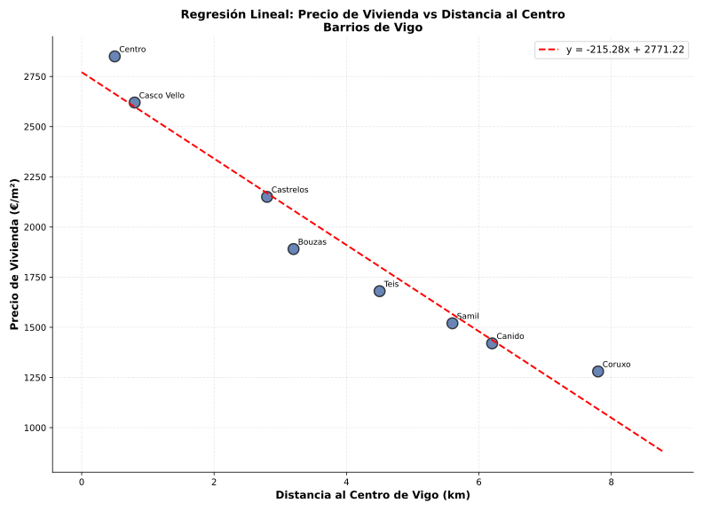

Propiedades importantes:

Ej 2.1: Calcular recta de regresión para: (1,3), (2,5), (3,6), (4,9), (5,10)
Recta de regresión: \(y = -1.2 + 2.6x\)
Interpretación: Por cada unidad que aumenta X, Y aumenta 2.6 unidades en promedio
Ej 2.2 (Contexto Vigo): Precio viviendas vs Distancia al centro
Usando datos de precio_viviendas_vigo.csv:
| Barrio | Distancia (km) | Precio (€/m²) |
|---|---|---|
| Centro | 0.5 | 2850 |
| Casco Vello | 0.8 | 2620 |
| Bouzas | 3.2 | 1890 |
| Teis | 4.5 | 1680 |
| Castrelos | 2.8 | 2150 |
| Samil | 5.6 | 1520 |
| Canido | 6.2 | 1420 |
| Coruxo | 7.8 | 1280 |
Recta: \(y = 2986.5 - 269.8x\)
Predicción para 5 km: y = 2986.5 - 269.8(5) = 1637.5 €/m²
Interpretación: Cada km de distancia al centro reduce el precio en ~270 €/m²
Diferencia entre interpolación y extrapolación:
Ejemplo: Si tenemos datos de distancias 0.5-7.8 km, predecir para 15 km es extrapolación arriesgada.